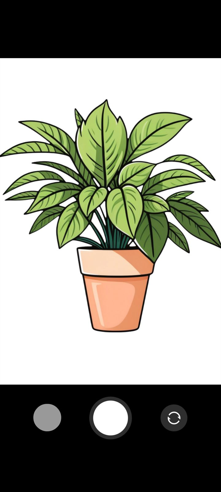
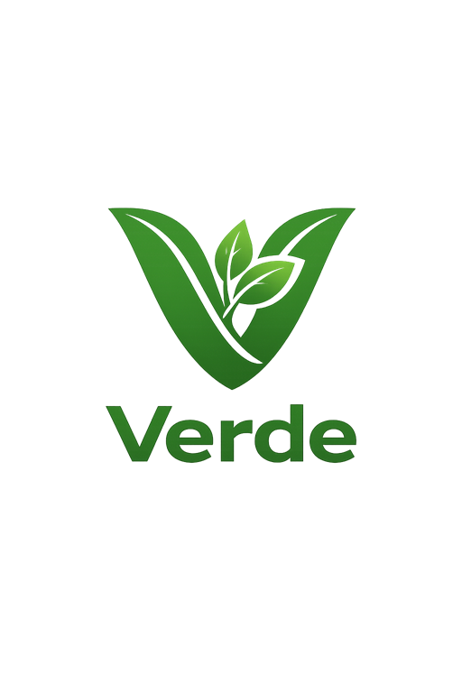
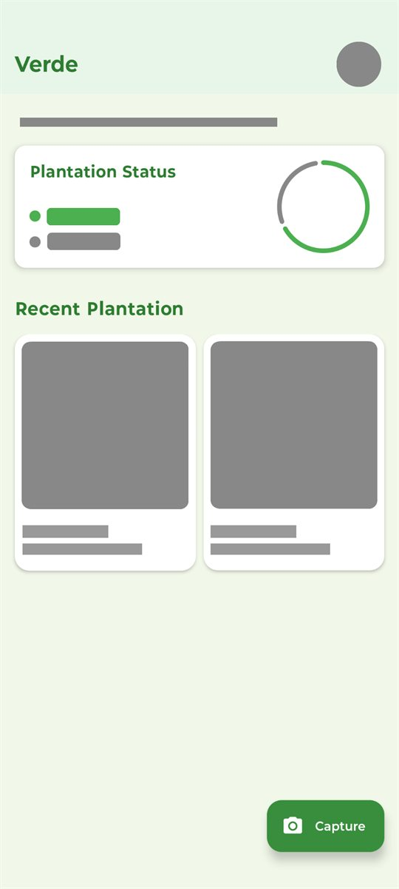
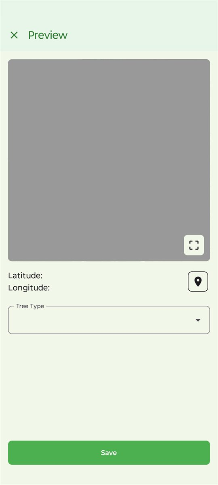

Detection Screen
The core experience centers on scanning a plant and receiving an immediate, visually clear result that keeps the user inside the exploration flow.

An AI-powered plant detection app that identifies species in real time, captures geolocation data, and layers environmental context into every discovery so users can explore nature with more intelligence and more care.

The app analyzes the captured plant image and returns likely species matches in seconds.
Each discovery is tagged with exact coordinates so the user can map and revisit findings.
Users get care cues, environmental relevance, and richer understanding of what they found.

The core experience centers on scanning a plant and receiving an immediate, visually clear result that keeps the user inside the exploration flow.

Verde pairs plant information with location-aware details so every discovery becomes part of a structured, useful record.
The home screen gives users a clean starting point for scanning, revisiting, and continuing their nature exploration journey.
Turns a simple photo into an informed plant discovery flow.
Reduces friction for identifying and logging species in the field.
Stores exact location data for personal records and exploration history.
Encourages awareness, curiosity, and responsible interaction with nature.
Verde was imagined as more than a recognition tool. The idea was to create a nature companion that helps users identify plants, understand where they were found, and build a more meaningful record of the environment around them.
Plant discovery is often fragmented between generic image search, note-taking, and maps. Verde combines those steps into one focused product experience built for exploration, learning, and eco-awareness.
Users can scan or upload a plant image and receive a likely species match through a real-time identification pipeline powered by machine learning.
Every plant entry can be saved with latitude and longitude, making each observation easier to revisit, organize, and map over time.
Verde adds context beyond identification, helping users understand the ecological relevance of a plant and encouraging more informed exploration.
The app supports documenting findings so users can build a personal archive of plants they have explored, identified, and tracked.
The user opens the app and scans a plant using the mobile camera or uploads an image.
The image is processed and matched against the recognition system to generate a species prediction.
Latitude and longitude are captured so the observation becomes part of a traceable discovery record.
The user views environmental details, saves the result, and builds a growing history of plant exploration.